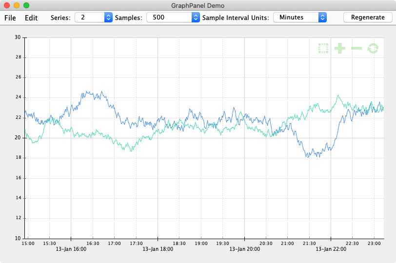

Expertise
- Interactive data visualizations using D3.js.
- Interactive computational modeling and visualization.
- Real-time collaboration between participants.
- JDK 13, Swing, computational modeling, UI, and graphics programming.
Clients
Created and integrated an interactive data visualization grapher for S9's Java Swing application managing scientific data retrieved from sensor buoy monitoring systems.
- Time axis major and minor gridlines and labels span range from millseconds to years.
- Plotting area can be panned left-right and up-down by dragging.
- Drag a selection rectangle in plot to zoom-in..
- Transparent icon checkbox for switching to drag a selection rectangle to zoom-in..
- Transparent icon buttons for zooming in, zooming out, and resetting graph axes.
- Plot can be printed, saved to a png file, and copied intothe system clipboard.
- Developed in Swing using TDD practices in NetBeans 11.2 and JDK13.
Grapher running in demo application.
TechnoFrolics combines engineering, art, the natural sciences, and play to create both compelling in-person interactive experiences as well as design tools for architecting and implementing these systems.
Updated legacy Java Swing application to build and run in Eclipse IDE and recent Java release.
Created prototype applications in C# and Xamarin.Forms for networked virtual reality communication and scene-building.
Sightlines Group consults with purpose-driven organizations to both facilitate change that matters and develop web applications to manage these processes.
My work for Sightlines Group has been both programming as well as mentoring an internal developer in the process of addingh features and extending their existing PHP application.
- Integration of CouchDB and development of queries.
- Using Bootstrap styling to build responsive pages.
- Integration of Chronify slotpicker.
- More effective use of browser development tools for html, css, and javascript development and debugging.
Created proprietary web application for managing and facilitating in-person collaborative brainstorming and planning.
- Rails v5.1.6 with Postgresql and Redis backend data stores.
- Extensive use of ActionCable websocket framework to support interactive real-time visual and textual collaboration among participants.
- Interactive collaborative visualizations using D3.js.
- Administrative, authoring, participant collaboration, and reporting systems.
- Scripted deployment using Capistrano to AWS development, staging, and production AWS servers.
- Integrated with Bootstrap styling and components.